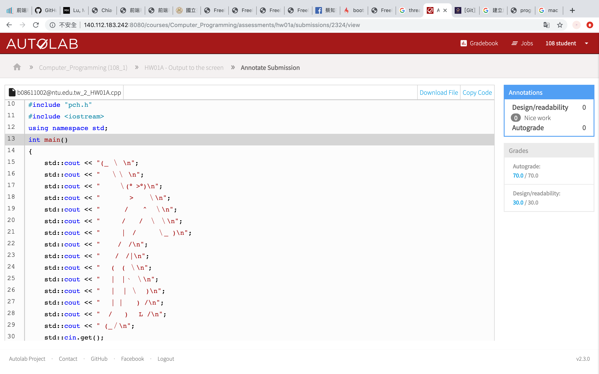
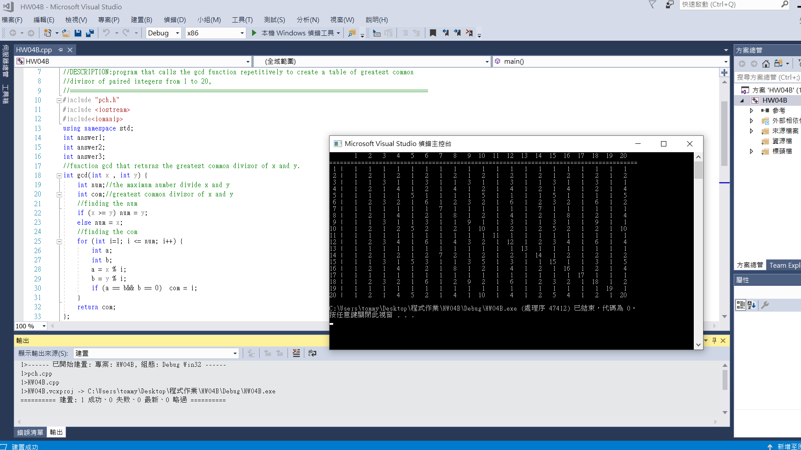

The greatest common divisor of integers x and y is the largest integer that evenly divides both x and y. Write a function gcd that returns the greatest common divisor of x and y. Also write a C++ program that calls the gcd function repetitively to create a table of greatest common divisor of paired integers from 1 to 20
result:
